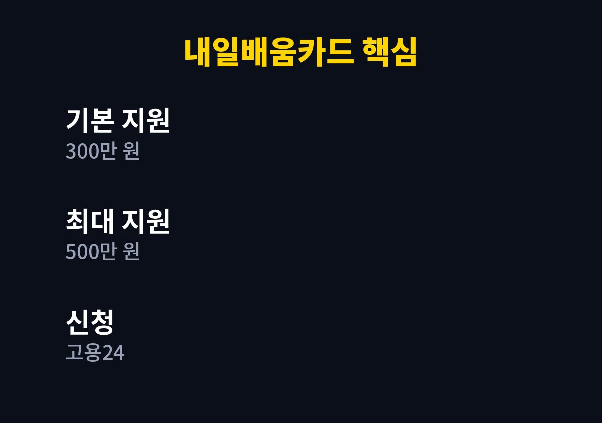
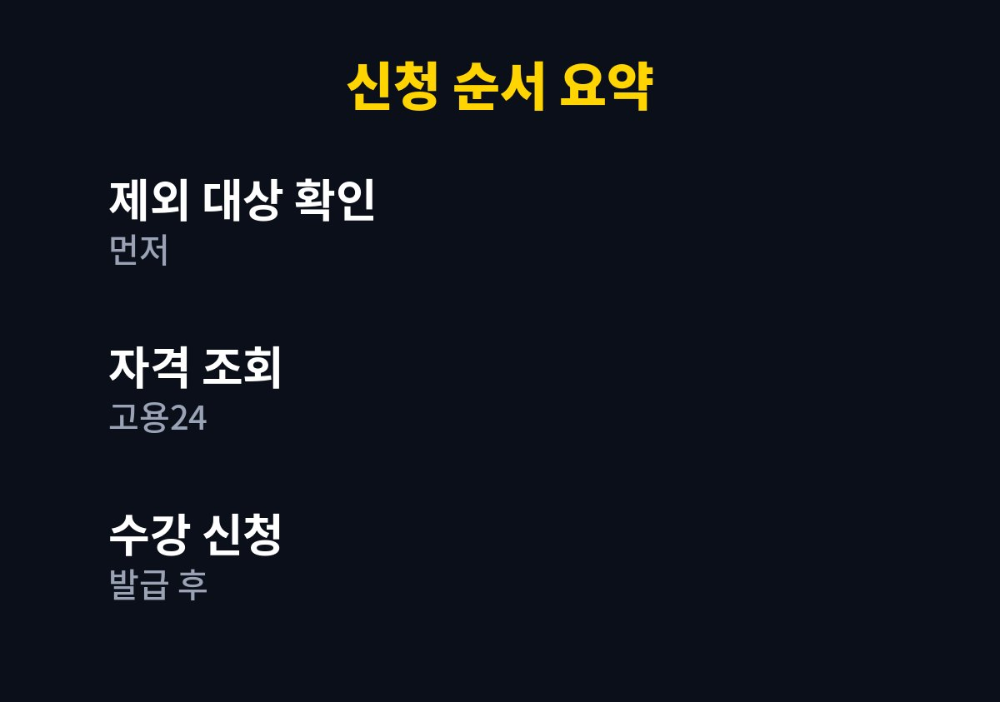

새로운 직무를 배우고 싶거나 이직과 재취업을 준비하는 분이라면 끝까지 읽어 볼 만하다.
2026년 11월 기준으로 내가 찾아보며 정리한 내용이다.
1인 사업을 하다 보니 배우는 데 드는 비용이 늘 고민이었고, 나라에서 지원하는 훈련 제도가 있다고 들어 궁금해서 찾아보았다.
그중 국민내일배움카드는 활용 폭이 넓은 제도였다.
국민내일배움카드는 직업 훈련을 받을 때 훈련비의 일부를 지원받는 제도다.
고용24에서 자격을 확인하고 발급받은 뒤 승인된 훈련 과정을 들을 때 쓸 수 있다.
확인된 자료에서는 기본 300만 원, 최대 500만 원 지원이라는 내용이 공통으로 나온다.
직장인은 받을 수 없다고 오해하는 경우가 많다.
재직 중이어도 받을 수 있다는 설명이 있는 반면, 제외되는 대상도 따로 정해져 있다고 한다.
그래서 신청 전에 내가 해당되는지 먼저 확인하는 과정이 필요하다.
배우는 것은 시간이 지나도 남는 자산이라는 생각이 들어 이 제도를 더 꼼꼼히 읽어 보게 되었다.
다만 모든 사람에게 같은 조건이 적용되는 것은 아니라서 과장된 후기만 믿고 움직이면 헛걸음이 될 수 있다.
제외 대상이 있다는 점이 가장 중요한 확인 사항이다.
어떤 경우가 제외되는지는 시기에 따라 달라질 수 있어 고용24의 공식 안내를 직접 읽어야 한다.
나는 정확하지 않은 기준을 적어 두지 않기로 했다.
신청 전에 제외 대상 항목을 처음부터 끝까지 한 번 읽어 보면 시간 낭비를 크게 줄일 수 있다.
본인이 해당하는지 헷갈린다면 추측하지 말고 고용센터에 직접 문의하는 방법이 가장 확실하다.
고용24에서 로그인한 뒤 내가 발급 대상인지 조회할 수 있다고 안내된다.
조회 결과가 애매하면 가까운 고용센터에 문의하는 것이 가장 정확하다.
조회 결과 화면은 캡처해 두면 나중에 상담을 받을 때 설명하기가 편하다.
현재 일하고 있는지, 쉬고 있는지에 따라 안내되는 내용이 다를 수 있다는 점도 기억해 둘 만하다.
기본 한도는 300만 원이고 조건에 따라 최대 500만 원까지 늘어나는 구조로 정리된다.
훈련 과정에 따라 자부담이 생길 수 있다는 설명이 여러 자료에 나온다.
자부담 비율과 훈련장려금 같은 세부 내용은 과정마다 다를 수 있어 공식 공고에서 확인해야 한다.
같은 이름의 과정이라도 기관과 시기에 따라 조건이 다르게 안내되는 경우가 있다.
그래서 결제를 하기 전에 내가 실제로 부담하는 금액이 얼마인지 먼저 확인하는 습관이 필요하다.
한도가 정해져 있으므로 가장 필요한 과정부터 고르는 것이 좋다.
같은 한도로 어떤 과정을 듣느냐에 따라 체감 이익이 크게 달라진다.
일에 바로 쓸 수 있는 과정인지, 수료 후 어떤 도움이 되는지 미리 따져 보는 것이 좋다.
단순히 비용이 싸다는 이유만으로 고르면 끝까지 듣지 못하고 포기할 수도 있다.
| 구분 | 내용 | 비고 |
| 기본 지원 | 300만 원 | 확인된 자료 기준 |
| 최대 지원 | 500만 원 | 조건에 따라 다름 |
| 신청처 | 고용24·고용센터 | 자격 조회 후 발급 |

신청은 고용24를 중심으로 이루어진다고 안내된다.
온라인이 어렵다면 고용센터 방문도 방법이다.
준비물은 상황마다 다를 수 있으니 접수 전에 안내를 확인해야 한다.
처음 발급받는 경우에는 화면 안내가 낯설 수 있으니 시간 여유를 두고 진행하는 것이 좋다.
아래 순서대로 점검하면 시행착오를 줄일 수 있다.

돈을 그냥 준다는 식의 광고나 대행 신청 권유는 조심해야 한다.
개인정보를 요구하는 곳이 아니라 공식 사이트에서 직접 진행하는 것이 안전하다.
제도 내용은 해마다 조정될 수 있으니 신청 직전에 공식 안내를 한 번 더 읽어 보아야 한다.
배우는 비용이 부담스러운 분에게 이 제도는 충분히 살펴볼 만하다고 생각한다.
다만 자격과 제외 대상은 반드시 공식 안내로 확인해야 한다.
※ 2026년 11월 기준 공개된 정보를 정리한 글이며, 정확한 대상 요건·금액·신청 기간은 복지로·정부24·관할 주민센터의 공식 공고를 확인하시길 바란다.